DiskTree
Speicherplatz-Analyse für Windows – schnell, live, ohne Installation.
DiskTree herunterladen Funktionen ansehen
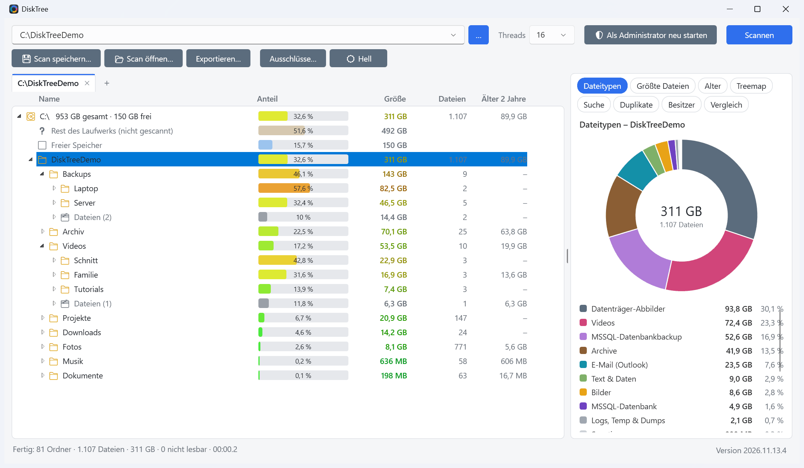
Was DiskTree kann
Pfad oder Laufwerk angeben, DiskTree scannt mit mehreren Threads und baut den Ordnerbaum dabei live auf. Die Screenshots zeigen erfundene Demo-Daten; ein Klick auf ein Bild öffnet es in voller Größe.
-
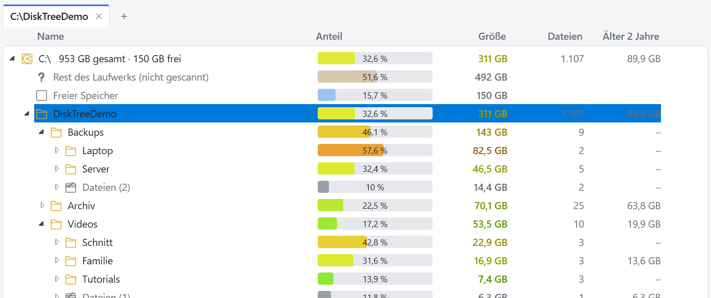
Live-Baum mit Balken
Ordner erscheinen sofort, die Größe wächst mit. Pro Ebene stehen die größten Ordner oben, Balken zeigen den Anteil. Bei einem Laufwerk beziehen sich die Anteile auf dessen Kapazität, dazu kommen „Freier Speicher“ und „Nicht erfasst“. Ein einzelner Ordner lässt sich an Ort und Stelle neu scannen.
-
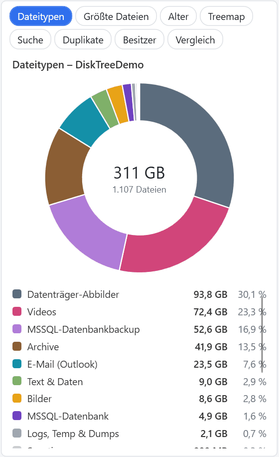
Dateityp-Diagramm
Word, Excel, MSSQL-Datenbank und -Backup, Bilder, Videos, Archive und mehr – für den jeweils markierten Ordner.
-
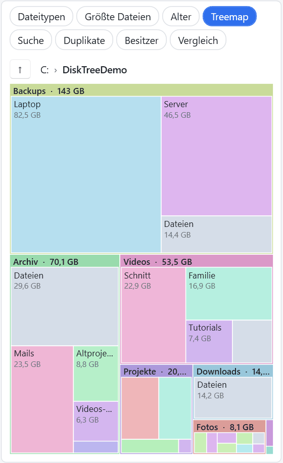
Treemap
Unterordner als Rechtecke nach Größe. Ein Klick markiert den Ordner im Baum, ein Doppelklick taucht ein.
-
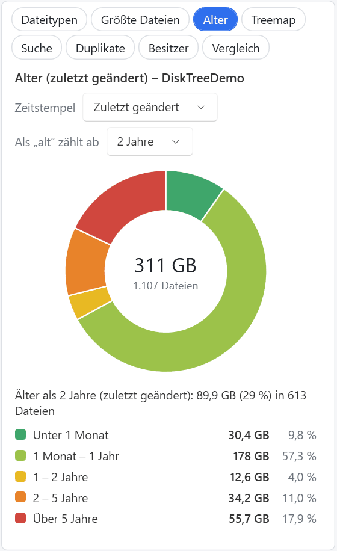
Alter der Dateien
Auswertung nach „zuletzt geändert“, „erstellt“ oder „zuletzt geöffnet“. Der Schwellwert für „alt“ ist einstellbar, im Baum gibt es dazu eine Spalte „Älter als …“.
-
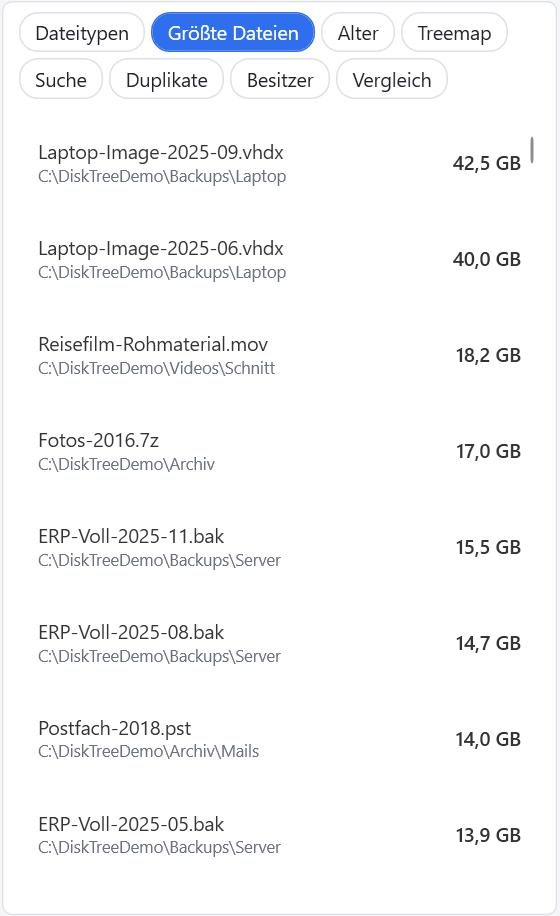
Größte Dateien
Die 200 größten Dateien des Scans auf einen Blick – mit Ordner und Größe.
-
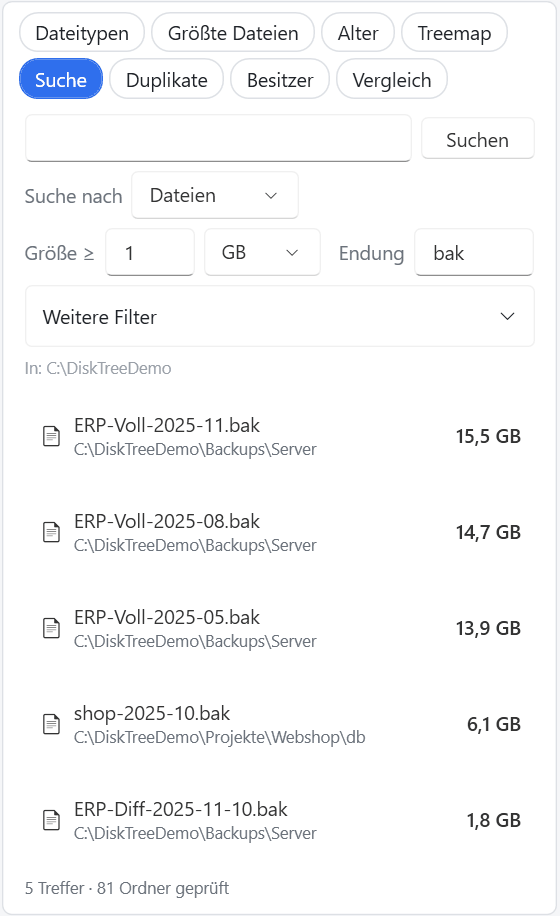
Suche und Filter
Strg+F: Ordner und Dateien nach Name, Mindestgröße und Endung. Weitere Filter für Zugriffs-, Erstell- und Änderungsdatum sowie Dateiattribute (versteckt, System, komprimiert, Cloud-Platzhalter …).
-
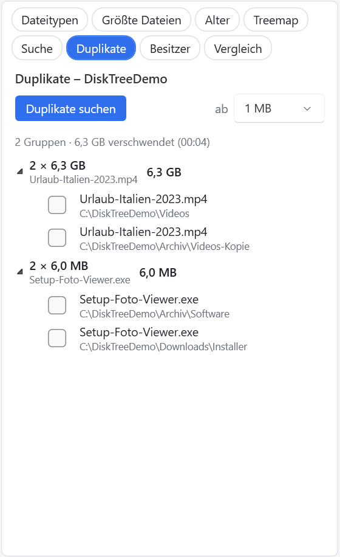
Duplikate finden
Gleiche Dateien werden über Größe, Teil-Hash und SHA-256 erkannt. Angezeigt wird der „verschwendete“ Platz.
-
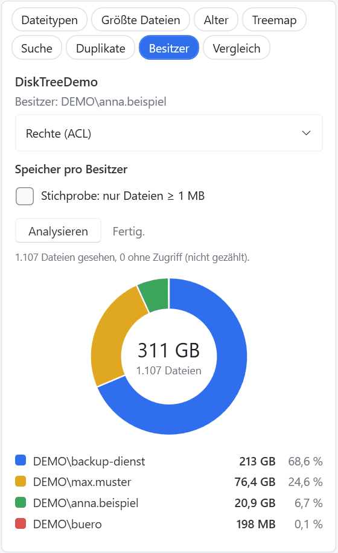
Besitzer und Rechte
Besitzer und Zugriffsrechte (ACL) des markierten Ordners, dazu der Speicherverbrauch pro Besitzer – auf Knopfdruck. (Die Konten im Bild sind für den Screenshot erfunden.)
-
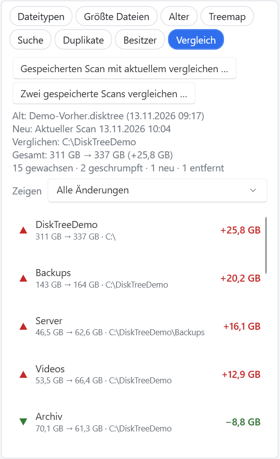
Scans speichern und vergleichen
Scans lassen sich als
.disktreespeichern und später öffnen. Der Vergleich zeigt, welche Ordner gewachsen, geschrumpft, neu oder entfernt sind. -
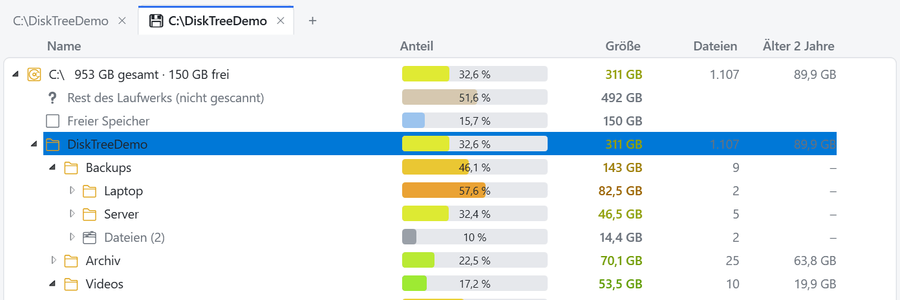
Mehrere Scans in Tabs
Aktuelle und gespeicherte Scans liegen in eigenen Tabs (Strg+T öffnet einen neuen). Mehrere Pfade, auch UNC-Pfade, lassen sich gemeinsam scannen.
-
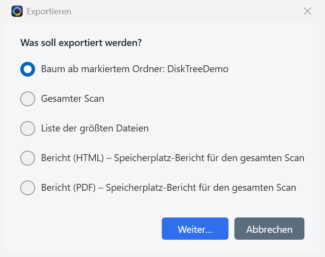
Berichte und Export
Export als CSV (Excel-tauglich) sowie Bericht als HTML oder PDF mit größten Ordnern, Dateitypen, Alter und größten Dateien.
-
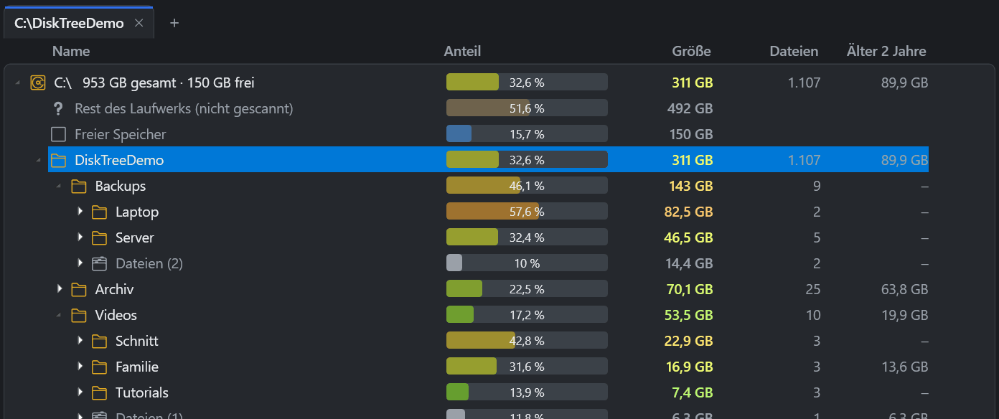
Hell und Dunkel
Die Oberfläche folgt der Windows-Einstellung; per Schalter in der Symbolleiste lässt sie sich auch fest auf Hell oder Dunkel stellen.


Weitere Funktionen
- AufräumenDateien markieren (Größte Dateien, Suche, Duplikate) und verschieben, in ZIP archivieren, umbenennen (F2, auch per Muster) oder in den Papierkorb legen – immer mit Bestätigung.
- Self-UpdateBeim Start sucht DiskTree nach einer neuen Version, lädt sie von den GitHub-Releases, prüft die SHA-256-Prüfsumme und startet neu. Abschaltbar.
- Explorer-KontextmenüOptional „Mit DiskTree analysieren“ per Rechtsklick auf Ordner.
- Portable-Modus
DiskTree.portableneben die exe legen oder--portable– Einstellungen bleiben neben der exe. - KommandozeilePfad(e), Threads, Ausschlüsse und mehr per Argument, siehe Kurzanleitung.
- UNC-PfadeNetzfreigaben wie
\\server\sharelassen sich scannen. - AusschlüsseOrdner nach Name, Muster (
*.tmp) oder Pfad vom Scan ausnehmen. - Windows-KontextmenüÖffnen, Öffnen mit, Löschen, Eigenschaften … direkt im Baum, dazu „Ab hier neu scannen“.
Download
Aktuelle Version: siehe GitHub-Releases
Zu den neuesten Releases auf GitHub
DiskTree.exe
Eine einzelne Datei, alles dabei. Läuft unter Windows x64 ohne Installation und ohne zusätzliche Laufzeit.
DiskTree-slim.exe
Sehr klein, braucht aber die .NET-10-Desktop-Laufzeit.
SHA256SUMS.txt
Prüfsummen der Dateien. Vergleiche sie nach dem Download, zum Beispiel mit Get-FileHash .\DiskTree.exe in PowerShell.
Hinweis zu Windows SmartScreen: Die Dateien sind nicht code-signiert. Windows SmartScreen kann deshalb beim ersten Start warnen („Der Computer wurde durch Windows geschützt“). Prüfe vor dem Start die SHA-256-Prüfsumme gegen SHA256SUMS.txt aus demselben Release; der Quellcode steht im Repository.
Kurzanleitung
- DiskTree starten, einen Pfad oder ein Laufwerk eingeben oder einen Ordner auf das Fenster ziehen.
- Auf Scannen klicken. Der Baum füllt sich live, die größten Ordner stehen oben.
- Einen Ordner markieren – das Seitenpanel zeigt Dateitypen, Alter, Treemap, größte Dateien und mehr dazu.
F5 scannt den markierten Ordner neu · Esc bricht einen laufenden Scan ab · Strg+F öffnet die Suche · Strg+T öffnet einen neuen Scan-Tab · F2 benennt um.
Kommandozeile
DiskTree.exe [Pfad] [Optionen]
Pfad Laufwerk oder Ordner, der sofort gescannt wird (mehrere Pfade möglich)
-t, --threads N Anzahl der Scan-Threads (1-256)
-x, --exclude MUSTER Ordner beim Scan überspringen (mehrfach möglich)
--portable Einstellungen neben der exe speichern
--no-update-check Beim Start nicht nach einer neuen Version suchen
--admin Direkt als Administrator neu starten
--no-admin-prompt Die Frage nach Administratorrechten überspringen
-h, --help, /? HilfeDiskTree.exe D:\ --threads 32
DiskTree.exe C:\Daten \\server\share --exclude node_modules --exclude *.tmpHäufige Fragen
Bleiben meine Daten lokal?
Ja. DiskTree liest nur das Dateisystem auf deinem Rechner (oder Netzlaufwerk) und sendet keine Scan-Ergebnisse irgendwohin. Es gibt keine Telemetrie.
Wann nimmt DiskTree Kontakt zum Internet auf?
Beim Start fragt die App bei GitHub nach einer neuen Version. Das lässt sich abschalten: Rechtsklick auf die Versionsanzeige unten rechts oder Start mit --no-update-check. Diese Webseite lädt nur beim Öffnen die Versionsangabe von GitHub nach; sie verwendet keine Cookies, Tracker oder externen Schriften.
Brauche ich Administratorrechte?
Nein. Mit Administratorrechten kann DiskTree aber auch geschützte Ordner lesen. Die App bietet den Neustart als Administrator optional an (abschaltbar mit --no-admin-prompt).
Welche Systemvoraussetzungen gibt es?
Windows (x64). Die Variante DiskTree.exe bringt alles mit; DiskTree-slim.exe benötigt zusätzlich die .NET-10-Desktop-Laufzeit.
Warum warnt Windows SmartScreen?
Die Dateien sind nicht code-signiert, daher kann SmartScreen warnen. Prüfe die Prüfsumme (SHA256SUMS.txt) oder baue DiskTree selbst aus dem Quellcode (.NET-10-SDK).
Wo melde ich Fehler oder Wünsche?
Als Issue auf GitHub.